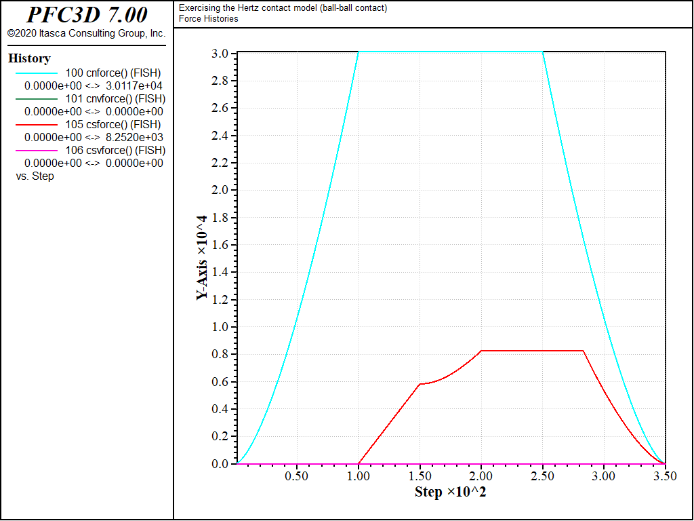
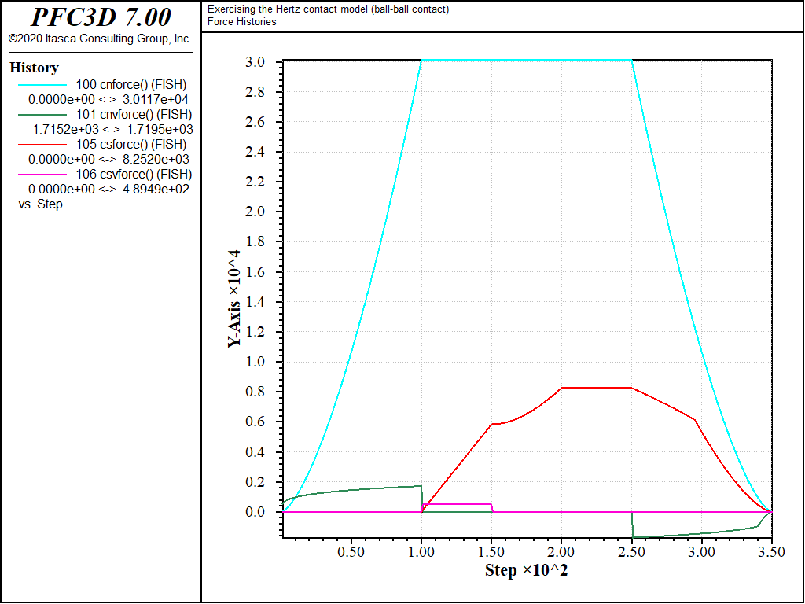
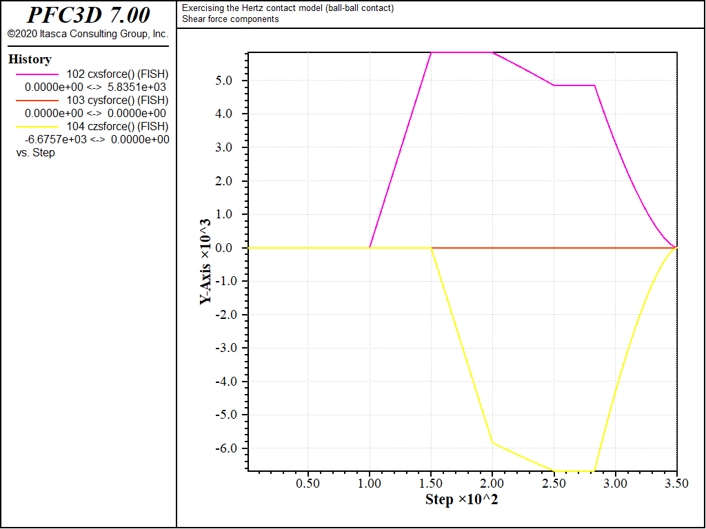
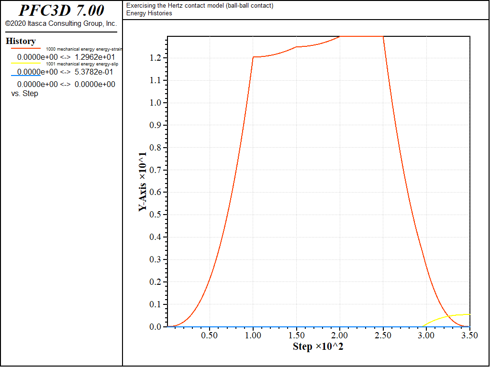
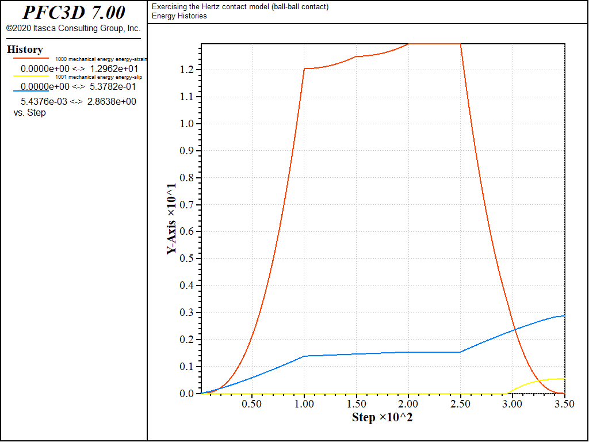
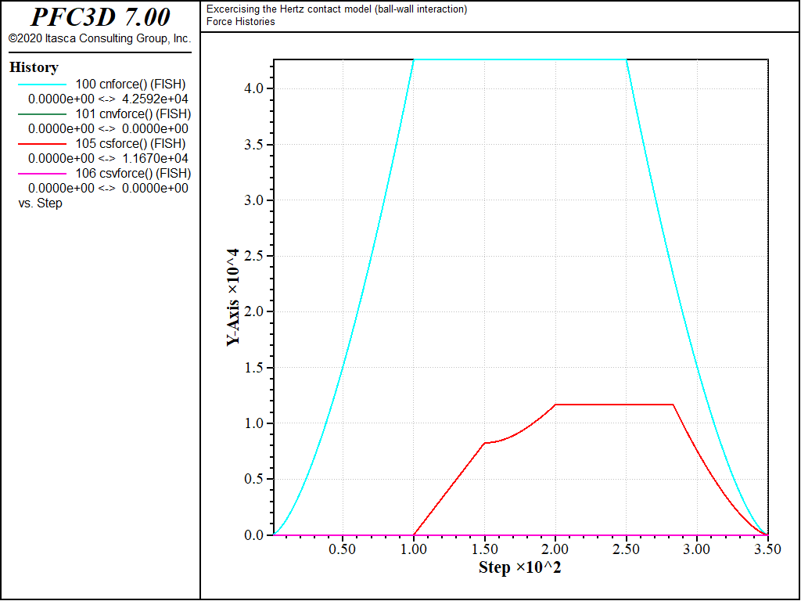
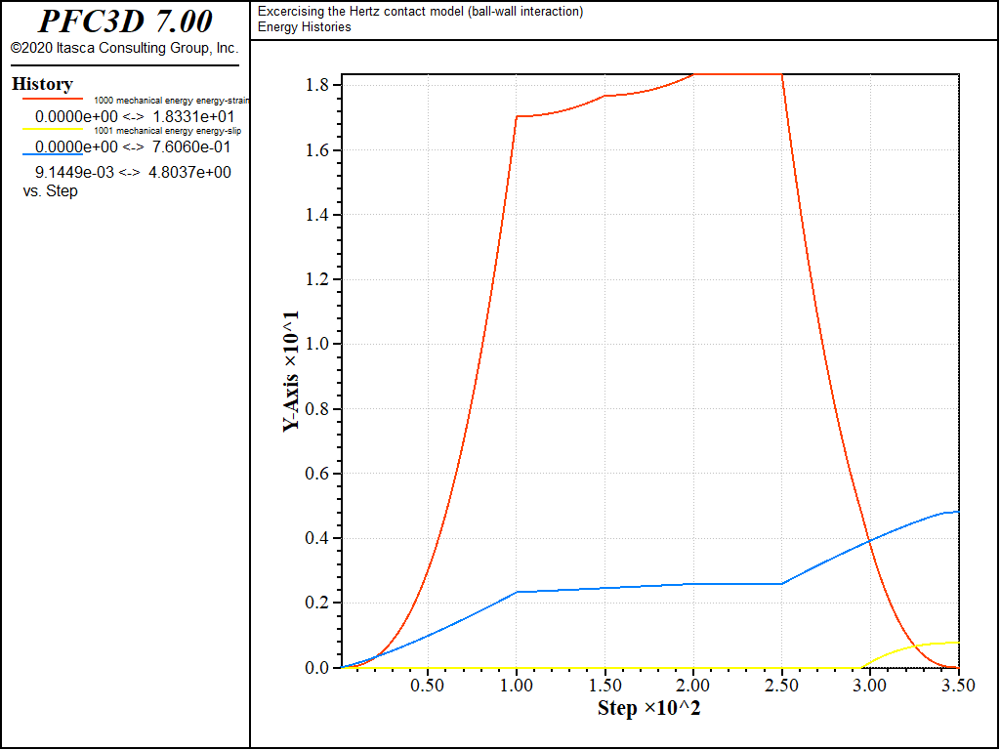

Hertz 接触模型：单一接触上的复杂加载路径
问题描述
Hertz 模型（Hertz Model） 提供了带黏性阻尼器的非线性弹性力-位移法则。 本算例的目的是分析单一接触在复杂加载路径下的响应。 文中讨论并比较了 ball-ball 接触与 ball-wall 相互作用的结果。
文件列表（3D）：
PFC3D 模型
建立了两个简单的系统。第一个系统由两个具有单位直径的相同球颗粒组成； 在第二个系统中，底部的球颗粒被替换为圆形墙体。
两个接触物体的所有自由度均被固定，并对顶部球颗粒施加位移 以对接触加载，加载路径如下（在全局坐标系中）：
- 在 \(t=0.1~\text{[time-unit]}\) 内法向加载 （沿 \(\mathbf{Y}\) 方向的加载位移）
- 在 \(t=0.05~\text{[time-unit]}\) 内滚动 （绕 \(\mathbf{Z}\) 旋转）
- 在 \(t=0.05~\text{[time-unit]}\) 内滚动 （绕 \(\mathbf{X}\) 旋转）
- 在 \(t=0.05~\text{[time-unit]}\) 内扭转 （绕 \(\mathbf{Y}\) 旋转）
- 在 \(t=0.1~\text{[time-unit]}\) 内法向卸载（沿 \(\mathbf{Y}\) 方向的卸载位移）
对两个系统，均将同一加载路径重复三次，每次采用不同的性质参数集， 如下所示（详细的说明与性质列表请参阅 Hertz 接触模型说明（Hertz contact model description））：
- \(G=1.0 \times 10^9\)、\(\nu=0.3\) 与 \(\mu=0.5\)；
- 与 1) 相同，另加 \(M_s=1\)（在法向卸载时激活剪切力的折减）；
- 与 2) 相同，另加 \(\beta_n=\beta_s=0.5\) 与 \(M_d=1\)（激活黏性阻尼）
模型结果
球-球接触

图 1：加载阶段 1a 结束时的球-球接触模型。
两个具有单位直径的相同球颗粒承受上文详述的加载路径。
图 （Fig.）Fig. #p3d-verif-hzbb-sys 显示了加载阶段 1a（法向加载）结束时系统的状态。
在该图中，接触被表示两次：一次表示为垂直于接触平面的直线，另一次表示为与接触平面
共面的圆盘。
加载路径
1、2 和 3 期间监测到的法向力和剪切力（弹簧和阻尼器中的力）的量值历史分别如图 图 （Figs.）Figs. #p3d-verif-hzbb1 至 #p3d-verif-hzbb3 所示。
在三种情况下，弹簧中法向力的演化完全相同：它在法向 加载阶段 a) 中呈非线性增大，在滚动和扭转加载阶段 b)、c) 和 d) 中保持恒定值，随后在法向卸载阶段 e) 中呈非线性 消失。其最大值对应于重叠量 \(1.0 \times 10^{-3}~\text{[length-unit]}\)，与 Hertz 接触模型说明中的式 (3) 和 (4)（(3) and (4) in the Hertz contact model description） 给出的 \(3.0117 \times 10^4~\text{[force-unit]}\) 解析解一致。


图 2：加载路径 1 期间弹簧力与阻尼器力（法向与剪切）的演化。球颗粒-球颗粒接触。



图 4：加载路径 3 期间弹簧力与阻尼器力（法向与剪切）的演化。球颗粒-球颗粒接触。
在情况 2) 和 3) 中，弹簧内剪切力的演化与情况 1) 相同，只是由于 \(M_s\) 的取值不同而有所差异。在情况 1) 中，法向
加载阶段 a) 内剪切力保持为零，随后在滚动加载阶段 b) 内呈线性增大。在后一阶段中，其斜率由初始切向剪切刚度给出，而在
重叠量恒定时该刚度保持恒定（Hertz 接触模型说明中的式 (11)（(11) in the Hertz contact model description））。在滚动阶段 c) 中，尽管重叠量不变
（因而初始切向剪切刚度也不变），剪切力的量值仍呈非线性增大。这是因为加载方向发生了改变，剪切力此时由两个分量构成（分别沿
\(\mathbf{X}\) 和 \(\mathbf{Z}\) 全局轴）。剪切力的量值不受扭转（加载阶段 d)）的影响，因为该阶段不会
累积剪切位移。然而，剪切力向量的方向会适应两个球颗粒之间的相对
扭转——如 图 （Fig.）Fig. #p3d-verif-hzbb1-shear 所示，其中剪切力 x 分量的
绝对值线性减小，而剪切力 z 分量的绝对值在扭转加载阶段内线性增大
（力学时间从 \(0.2\) 到 \(0.25~\text{[time-unit]}\)）。最后，由于在法向卸载阶段 1e) 内不会
累积剪切位移，剪切力在该阶段开始时保持恒定
（图 （Fig.）Fig. #p3d-verif-hzbb1——力学时间从 \(0.25\) 到 \(\approx 0.28~\text{[time-unit]}\)）。然而，随着卸载
的进行，最终会满足库仑滑移准则，剪切力随法向力一同消失（力学时间
从 \(\approx 0.28\) 到 \(0.35~\text{[time-unit]}\)）。


图 5：加载路径 1 期间弹簧剪切力分量的演化。球颗粒-球颗粒接触。
在情况 2) 和 3) 中，剪切力的演化与情况 1) 相似，只是在法向卸载
阶段 e) 有所不同。对于这些情况，法向卸载时剪切力的按比例折减已启用（\(M_s=1\)）。因此，剪切力
在法向力减小的同时开始线性减小，直至满足库仑准则，剪切力
随法向力成比例地消失（图 （Fig.）Fig. #p3d-verif-hzbb1——力学时间从
\(0.25\) 到 \(0.35~\text{[time-unit]}\)）。由于情况 2) 和 3) 中滑移开始时的剪切力量值因而低于
情况 1)，滑动过程中耗散的能量也会更低。这一点可通过比较
图 （Figs.）Figs. #p3d-verif-hzbb1-energy、#p3d-verif-hzbb2-energy 和 #p3d-verif-hzbb3-energy 看出，这些图分别给出了
加载情况 1)、2) 和 3) 期间接触能量（应变能以及滑移功和阻尼器功）的
演化。请注意，黏性阻尼仅在加载情况 3) 中启用，这也是唯一一种阻尼器力
（图 （Fig.）Fig. #p3d-verif-hzbb3）和阻尼器功（图 （Fig.）Fig. #p3d-verif-hzbb1-energy）不为零的情况。

图 6：加载路径 1 期间接触能量（应变能、滑移功和阻尼器功）的演化。球颗粒-球颗粒接触。


图 7：加载路径 2 期间接触能量（应变能、滑移功和阻尼器功）的演化。球颗粒-球颗粒接触。


图 8：加载路径 3 期间接触能量（应变能、滑移功和阻尼器功）的演化。球颗粒-球颗粒接触。
球颗粒-墙体相互作用

图 9：加载阶段 1a 结束时的球颗粒-墙体相互作用模型。
图 （Fig.）Fig. #p3d-verif-hzbw-sys 给出了球颗粒-墙体相互作用情况下加载阶段 1a（法向加载）结束时的系统状态。在此情况下，球颗粒与构成墙体的面片之间存在多个接触。然而，由于启用了完全接触解析模式（默认设置），同一时刻仅有一个接触被视为活动接触，尽管
可能有多个接触呈现正重叠量（更多细节请参阅 面片化墙体逻辑的说明（description of the faceted wall logic））。
加载路径 1、2 和 3 期间监测到的法向力和剪切力（弹簧和阻尼器中的力）的量值历史分别如图 图 （Figs.）Figs. #p3d-verif-hzbw1 至 #p3d-verif-hzbw3 所示，接触能量的
历史如图 图 （Figs.）Figs. #p3d-verif-hzbw1-energy 至 #p3d-verif-hzbw3-energy 所示。
所有量的演化在定性上都与球颗粒-球颗粒接触的情况相似。然而，尽管接触剪切模量 \(G\) 和泊松比 \(\nu\) 相同，各量在定量上并不相同，因为接触有效半径不同 （Hertz 接触模型说明中的式 (6)（(6) in the Hertz contact model description））。


图 10：加载路径 1 期间弹簧力与阻尼器力（法向与剪切）的演化。ball-facet 接触。

图 11：加载路径 2 期间弹簧力与阻尼器力（法向与剪切）的演化。ball-facet 接触。

图 12：加载路径 3 期间弹簧力与阻尼器力（法向与剪切）的演化。ball-facet 接触。

图 13：加载路径 1 期间接触能量（应变能、滑移功和阻尼器功）的演化。球颗粒-面片接触。

图 14：加载路径 2 期间接触能量（应变能、滑移功和阻尼器功）的演化。球颗粒-面片接触。


图 15：加载路径 3 期间接触能量（应变能、滑移功和阻尼器功）的演化。球颗粒-面片接触。
结束语
在本例中，采用 Hertz 接触模型的球颗粒-球颗粒接触和球颗粒-墙体相互作用在复杂 加载路径下进行了计算。文中讨论并比较了力与能量的演化。
| 这些内容对您有帮助吗？… | FLAC3D © 2019, Itasca | 原文更新于 2020 年 10 月 8 日 |
| 版权与免责声明 | ||